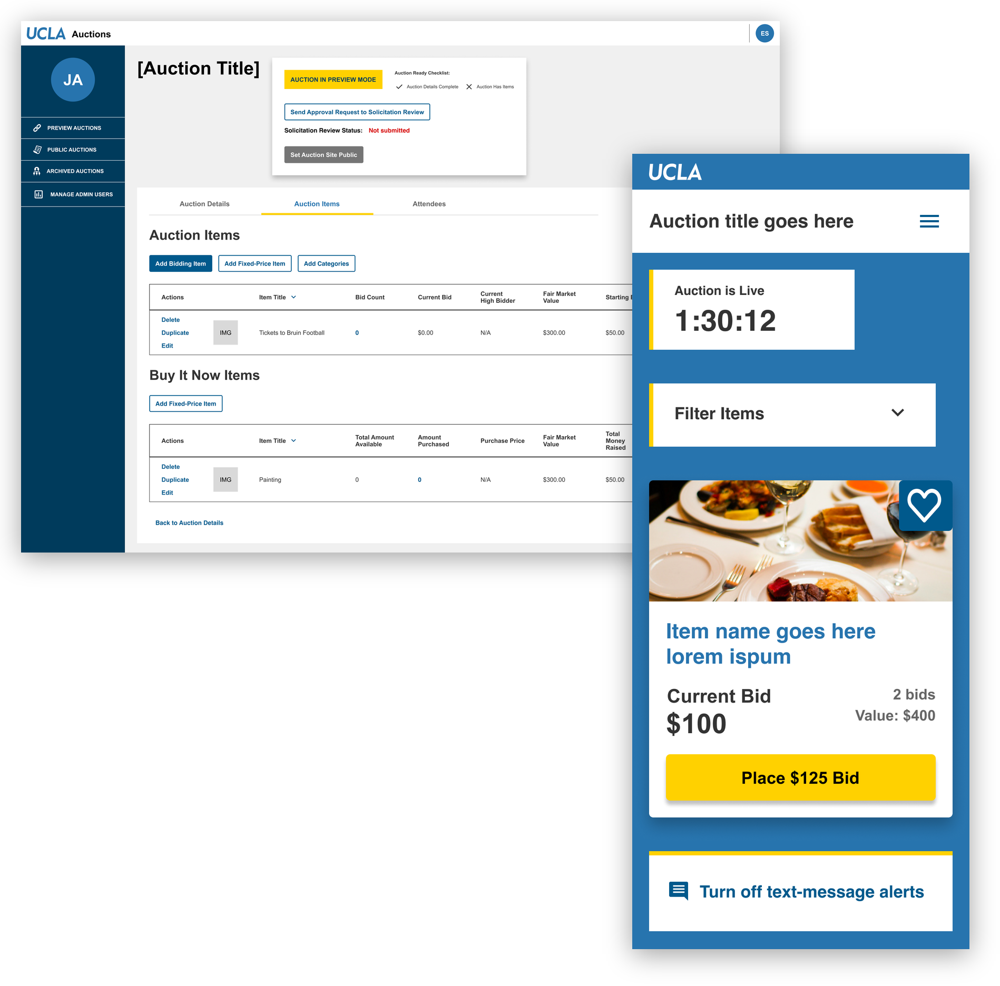
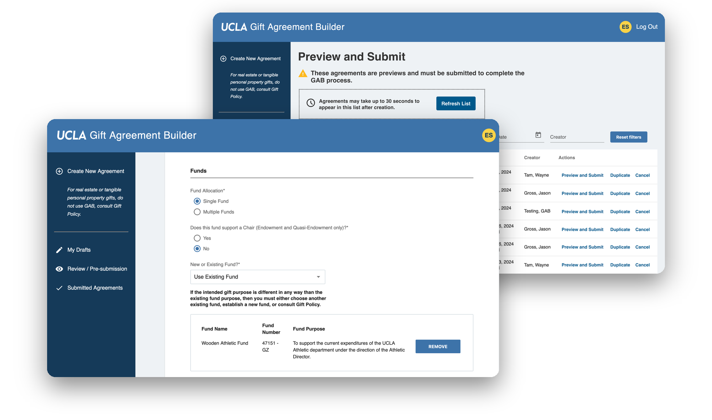
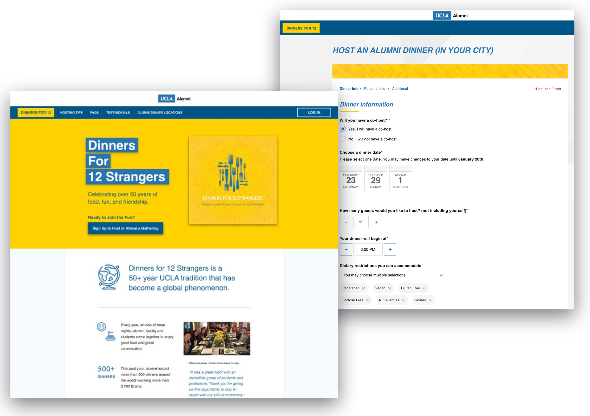
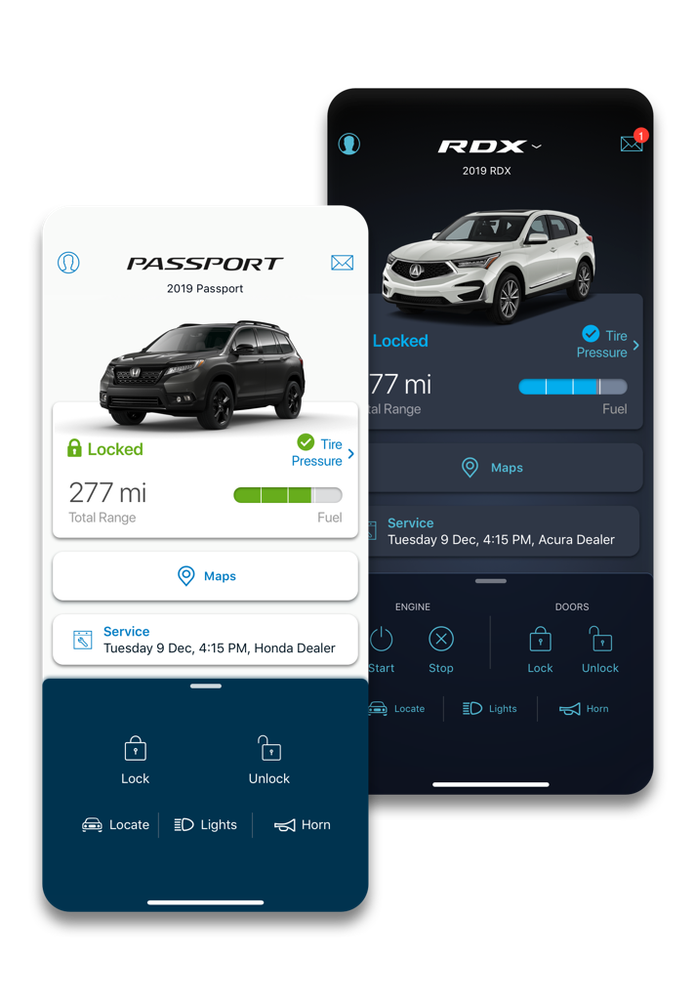
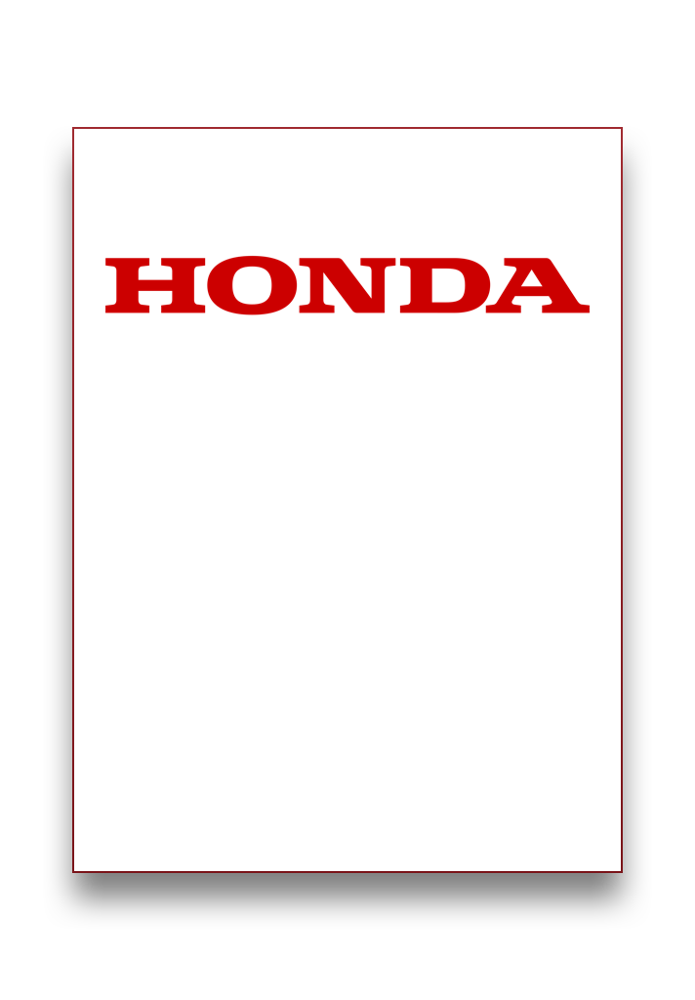
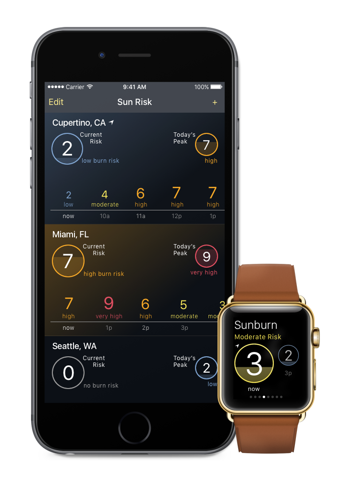

I'm a technical product manager with hands-on design and development experience who takes software from first idea to launch. I work directly with stakeholders to get to the real pain points, and ensure that stakeholders, engineers and designers are enabled to work as true collaborators.
Since 2020 I've worked at UCLA External Affairs, first as a Digital UI/UX Designer and now as Technology Product Manager. I've led internal fundraising and gift-processing products from inception, including UCLA Auctions and Gift Hub. As a designer, I also built UCLA's digital donation receipts, writing the AmpScript myself.
At Honda, I led the redesign of the HondaLink and AcuraLink connected-car apps and led design for an in-car package delivery partnership with Amazon. Before that, at Honda R&D, I built prototypes of in-vehicle interfaces for in-car entertainment and autonomous driving.
Through my own studio, I designed, coded in Swift, and shipped Sun Risk, an iOS and Apple Watch app. Sun Risk was featured by Apple on the home page of the App Store and highlighted in multiple "Best Apps" collections curated by Apple.
I'm open to new product management and design roles. Get in touch ›
UCLA Auctions lets UCLA staff run their own fundraising silent auctions on a platform built in-house.
I led it from inception: defining the product with fundraising staff, planning features, writing test cases, and incorporating stakeholder feedback into each release.
$100K+
raised from individual donors in the 18 months since launch

100%
increase in gift processing throughput
1,500+
gift agreements generated since 2023

Dinners for 12 Strangers is a 50-year UCLA Alumni tradition: alumni, faculty, parents, and students host small dinners for fellow Bruins around the world, in person and online.
I designed the program's website, from the landing page to the multi-step sign-up flows for hosting or attending student, alumni, and parent gatherings.

The HondaLink and AcuraLink mobile apps let drivers see detailed information about their vehicles and control their vehicles remotely.
I led a comprehensive redesign of both apps, consolidating them onto shared design components built around how drivers actually use them. After launch the launch of our redesign, the app’s App Store rating rose from 1.5 to 3.5 stars.
I also led design for Honda's partnership with Amazon to deliver packages directly inside customers' vehicles.

I prototyped in-vehicle interfaces for autonomous driving and a better vehicle-entry experience, turning user research into product specs engineering could build from.
I started, pitched, and led a project exploring a new infotainment layout grounded in research on human visual perception. In external user testing, the prototype scored significantly higher on usability and appeal than existing infotainment systems.

Sun Risk is an iOS and Apple Watch app that uses dynamic color and typography to show your risk of sun damage at a glance.
Apple featured it on the front page of the App Store and in multiple collections, and it reached the Top 15 paid weather apps.
I conceived, designed, built (Swift and Xcode), and marketed the app myself.

I'd love to hear about what your team is building.